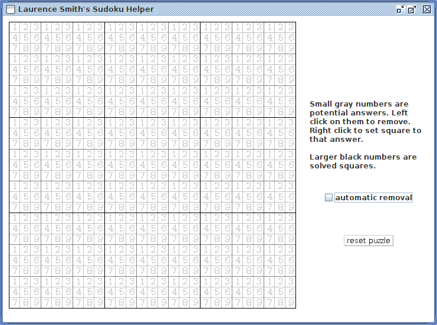

|
Sudoku is a number puzzle.
You have to fill in a supplied grid so that every column, every row and every 3x3 box contains the digits 1 to 9. Some digits are given as a starting point and from these you can work out where all the other digits should go.
To solve the puzzle you need to keep track of which numbers are allowed to be placed in each square. You can either do this through memory - too difficult for me -
or by writing the numbers in the squares. However, normally there is a small 9x9 grid and if you have handwriting like mine this quickly gets very messy.
So, I've created a Java program where each one of the 81 squares is further divided into 9 squares. Each of these squares starts showing the 9 possible values for the containing square.
If you left click on one of these small grey numbers it disappears. When only one number remains it is replaced by a large black number to show the solution for that square. Or, if you know the solution to a square you can right click on that small grey number to create the large black number.
Note: you are not given any help with the thought required in solving the puzzle! But it does help with keeping track of things.
You can download a "JAR" file to run the application or see the source code on my GitHub site.
Here is a screenshot:

Selecting "automatic removal" means that when an individual square has been solved,
all other individual squares in the row, column and 3x3 square will have that number removed from their
allowed numbers. Warning - this makes the game lot easier to solve and takes some of the fun away.
The three text fields and "add to puzzle" button are for quickly adding numbers to the puzzle,
particularly useful for inputting the initial numbers.
The "reset" button returns the puzzle to its blank state - only use this if you have made a mistake.
Have fun.
|